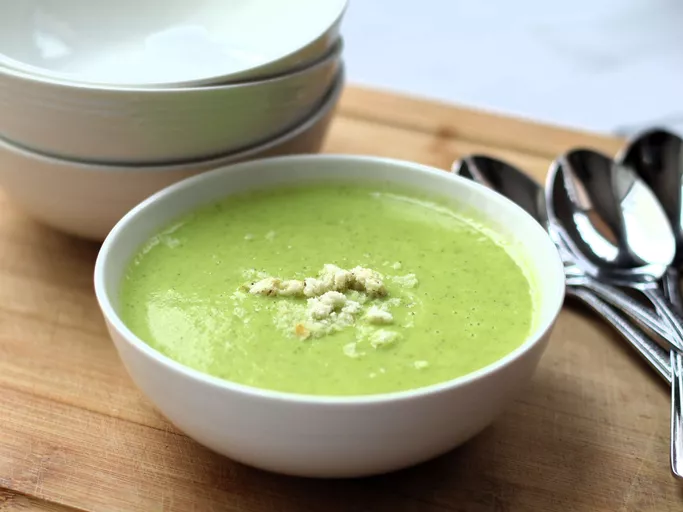

Zucchini Soup

This zucchini soup is so rich and creamy that you won't believe there's no cream added.
It's easy to make and bursting with flavor, but your guests will think you've been cooking all day! Delicious hot or chilled.
Ingredients
- Butter: This zucchini soup starts with a stick of butter.
- Zucchini: You will need two pounds of zucchini, cut into chunks.
- Broth: Use store-bought or homemade chicken broth.
- Seasonings: Season the zucchini soup with salt and curry powder.
Steps
- Melt butter in a pot over medium heat. Add zucchini, chicken broth, salt,and curry powder to the pot;
cook until the zucchini is soft, about 15 minutes.
- Pour soup into a blender no more than half full. Cover and hold lid in place;
pulse a few times before leaving on to blend. Puree in batches until smooth.